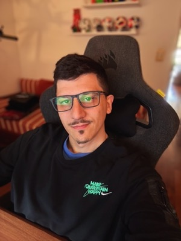

Security governance
ISO/IEC 27001:2022, risk management, audit readiness, business continuity, and security-by-design.
ISO 27001NISTMITRE ATT&CK
Rosario, Argentina Global perspective
CISO, Security Lead, and Head of DevOps building secure cloud platforms, resilient infrastructure, and delivery practices teams can trust.

The through-line
My career began in network engineering and on-premises security, then moved into cloud security, infrastructure automation, governance, and DevSecOps leadership.
Today I work across strategy and implementation: strengthening security posture, improving operational resilience, and building well-governed environments that support business continuity and long-term growth.
Areas of focus
ISO/IEC 27001:2022, risk management, audit readiness, business continuity, and security-by-design.
Secure Azure and AWS foundations, identity, CI/CD controls, and delivery workflows that scale with the organization.
Highly available platforms, infrastructure as code, enterprise networking, disaster recovery, and operational resilience.
Proof of practice
Selected credentials and relevant public badges, presented with their issuer rather than as a flat list.
Additional details and original badge records: view the public Credly wallet ↗
Career timeline
A progression from networks and datacenters to security governance, cloud platforms, and the teams that operate them.
Miracle Devs, Inc.
Leading cybersecurity, cloud security, infrastructure, and DevSecOps initiatives across Azure and AWS. Serving as CISO for governance, ISO/IEC 27001:2022, risk, compliance, resilience, and secure delivery.
NeuralSoft
Designed and operated replicated datacenter networks, BGP peering, FortiGate security, Linux environments, OpenStack private cloud, VXLAN, and MikroTik automation.
Neoris
Supported South America infrastructure, routing, LAN/WAN, enterprise Wi-Fi, Linux and Windows servers, IP telephony, and technical escalations.
EducacionIT Rosario
Teaching practical networking, Linux administration, infrastructure, and cybersecurity through hands-on labs and real-world troubleshooting.
Open channel
For security leadership, cloud resilience, DevSecOps, or infrastructure conversations, email is the fastest way to reach me.
ivan.rzk@gmail.com